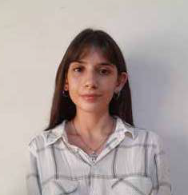

Somos un Estudio integrado por los arquitectos Federico Alvarez Paccioretti y Dana Iovane, dedicados al proyecto, dirección, administración y desarrollo de obras de viviendas individuales y colectivas, oficinas y obras industriales y comerciales. Con más de diez años de experiencia, somos el resultado de la trayectoria de tres generaciones de arquitectos, constituimos un equipo permanentemente actualizado, con formación constante, valorizando la importancia del trabajo en equipo, la atención personalizada y la resolución de las dificultades en conjunto, para poder lograr la mayor calidad y economía de diseño. Trabajamos en base a la idea de que todas las actividades humanas pueden ser enriquecidas y mejoradas según el marco en el que tienen lugar, diseñando proyectos que se adapten a las necesidades y preferencias del cliente, teniendo en cuenta el confort y el valor su inversión. Nos enfocamos en la calidad y la correcta materialización de los proyectos, caracterizándonos por brindar una atención personalizada y asesorar a nuestros clientes con al compromiso y respondiendo la confianza que nos brindan.
Arq. Federico Alvarez Paccioretti Arquitecto 2017 UCC – Universidad Catolica de Cordoba

Dana Iovane Diseñadora de interiores Universidad Nacional de Rio Negro 2021